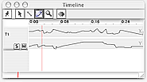
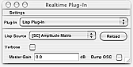
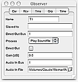
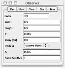
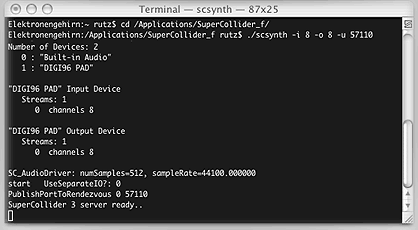
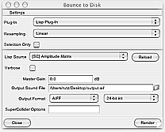

this is a step by step tutorial through the programme. it will show you how to create a simple example session but not how to use every single feature of meloncillo. the session results do not accompany the normal meloncillo installation. you can download them separately from the meloncillo sourceforge site.
when you are running meloncillo for the first time, it will open with a default window layout, a welcome screen, and the preferences frame. you can simulate this situation by deleting the preferences, which are for example on mac os x stored in YourHomeFolder/Library/Preferences/de.sciss.meloncillo.plist.
before we look at the session's windows, let us examine the preferences frame. if you select the "General" tab, you see a list of items that affect the general look and feel of the programme. meloncillo can be displayed with different graphical skins which are listed in the "Look-and-Feel" combo box. also note the field "Shortcut for Online Help". this shortcut key allows to you find online help documents related to the current focussed window. for example, if the preferences frame is selected and you type this shortcut, it will turn blue. once you move the mouse around, some areas are highlighted yellow. this indicates that help files are available for objects in this area. if you click the mouse button, they will be displayed in this help browser (therefore replacing the tutorial text you are reading now). to cancel the help mode, press the Escape key.
now take a look at the second tab labelled "Plug-Ins" as a beginner, you usually shouldn't adjust the fields here, but some information is useful: meloncillo doesn't synthesize sound itself, it relies on a third party application such as supercollider or csound. to follow the tutorial, you should have at least installed supercollider on your computer. supercollider can be downloaded from sourceforge. after installing supercollider, verify that the field "SuperCollider Synth Application" points to the file scsynth in your installation.
now close the preferences frame.
next we will look at the most important window, the surface frame. if you don't see this window, choose "Surface" from the window menu.
for simplicity, think of the surface as a bird's view on your performance space. let us, for the moment, assume you want to diffuse a single mono soundfile through a bunch of speakers, say four speakers. with a group of discrete loudspeakers, you can create the virtual image of a moving or static sound source somewhere along the line or circle of your speakers, by putting the sound on one or several speakers, only altering the volume of each speaker. this is the traditional way of multi-speaker diffusion, called intensity panning. panning is an artificial word derived from the term "panorama" which assumes speakers are set up in front of you, forming the panoramic horizon, and the sound is placed somewhere in this panorama. intensity panning refers to the process of changing the speakers' volume.(excursion) you may know that our ear detects the location of sounds by different cues. natural sound sources are detected by comparing the volume (intensity) difference and the time interval (delay) of the wave front arrival between our ears. virtual or "phantom" sources can be created with loudspeakers by providing this level or phase difference. in a stereo situation where the left and right speakers are placed at the same angle to the left and right of your head, playing the sound back at the same volume means that both your left and right ear hear the same volume, suggesting that the sound source is located directly in front of you. if you attenuate the right speaker, the auditory system (your brain) thinks the sound comes from the left, because a real source that comes from the left would also result in this perception: the sound would have to travel around your head to the right ear, loosing some intensity.the "laws" of intensity panning are quite well understood, but are dynamic depending on your spatial situation. for example, in a normal closed space there is interaction with reflecting sound waves, and the distance of the speakers to your head might be different, resulting in an intervention of other contradictory cues such as an unwanted time delay. this tutorial's aim is not to cover all these problems, there are whole books about this. let us just assume that you either know the target spatial situation or you have some means of readjusting the session setup directly at the site. let us take a pragmatic point of view and forget the "laws" of panning, instead using an empirical approach: meloncillo allows you to adjust the panning laws in an arbitrary way, so by using your aural judgement, you can create panning curves that sound right for you.
by default, rulers are shown on the top and left of the surface. if not, check the "Rulers" item in the view menu. the surface is an abstraction of your real space. it has a width and height of 1.0, the top left having a coordinate of (0.0, 0.0), the center being (0.5, 0.5). first we should create some objects that correspond to your speakers. to do so, select the pointer tool (arrow icon) from the tool palette of the surface frame. now double-clicking on the surface will create a socalled receiver objects at that location. create four receivers. if you create more than wanted, you can delete them by pressing the Delete key. you can select and move receivers with the pointer tool as well. to do so, press and hold the mouse button over the receivers center (the red crosshair), then drag the mouse. you can see the exact position of the selected receiver in the observer palette. if you don't see this palette, choose "Observer" from the window menu. be sure that the tab labelled "rcv" is selected. place
you can type these values directly into the fields of the observer palette. confirm each value by pressing the Enter key.

you see, the boundary of each receiver touches the center of the neighbouring receiver's center (called the "anchor"). using the default panning curves of the receiver, indicated by the grayscale shading, this setup is a very good starting point, because the transitions between neighbouring receivers follow the "equal power law" and are acoustically smooth without producing the impression of "holes" between two speakers.
next we will create an object that represents a moving mono sound file. the movement is recorded in a trajectory track that is shown in the timeline frame. if you do not see the timeline frame, choose "Timeline" from the window menu. the timeline resembles the "edit" window in protools, the "arrange" window in logic pro or the "sequence view" in final cut.
a moving object with a trajectory is called transmitter in meloncillo. to create a new transmitter, choose "New Transmitters..." from the "Insert" submenu of the file menu (shortcut: Meta+Shift+N where Meta is the Apple or Ctrl key depending on your platform). a dialog will pop up and ask you how many transmitters you want. create just one transmitter now.
a new row will appear in the timeline frame, a field labelled "T1" on left -- the transmitter's name --, and a blank field on the right. before we can do anything else, you must make a preliminary decision about the length of our trajectory. this length can be truncated or expanded later on. for the moment, let us decide that the trajectory should last for thirty seconds. before we can record the movement, we must insert this amount of time into the track. to do so, choose "Insert Time Span..." from the timeline menu (shortcut Meta+Shift+E), type "30" and press "Ok". the formerly blank field on the right side of the timeline frame will now show two horizontal lines, and at the top of the timeline frame, a time ruler, the socalled timeline axis displays time labels for this new time span (0.0 seconds to 30.0 seconds).
The field on the right, next to "T1", is called the trajectory track (or transmitter editor). the top half describes the horizontal movement (along the X-axis), the bottom half describes the vertical movement (alng the Y-axis). by selecting the pencil tool from the timeline's toolbar, you can directly draw into the trajectory track (press and hold, then drag the mouse). you may have noticed that a green crosshair labelled "T1" has also appeared on the surface. it shows the transmitter's position at the current timeline position. the timeline position is indicated by a red vertical bar in the timeline frame. you can move this position by pressing and holding the mouse over the timeline axis and then moving the mouse to the left or the right. the green crosshair on the surface follows the movements in time.

next we want an aural evidence of our gesture. remember that meloncillo is not producing sound by itself but relies on a plug-in to do this job. you may have noticed the transport palette containing the standard symbols for play, stop and cueing. pressing the play button (shortcut: Space bar) will playback your gesture from the current timeline position, but there is no sound output yet.
open the realtime plug-in frame by choosing "Realtime Plug-In" from the window menu. it will take a short moment to initialize the lisp library. the plug-in combo box of the realtime frame shows all available plug-ins. in this version, the lisp plug-in is the only available plug-in. note that lisp plug-in means that a script written in the language LISP is used to communicate between meloncillo and the synthesis application. you don't have know lisp to operate it. a few readymade lisp scripts are installed with meloncillo. select the "[SC] Amplitude Matrix" from the "Lisp Source" combo box (this is usually done automatically). the realtime frame should look like this now:
each plug-in can define properties for the session objects, that is attributes for receivers and transmitters that control the realtime synthesis. these properties are shown in the observer palette. for example, the plug-in script we are using now allows you to specify the sound file associated with the transmitter and the output channel of each receiver. select the transmitter by clicking on it's name "T1" in the timeline frame. the field will turn blue to indicate that this transmitter is the selected transmitter. the observer will show the "trns" tab (if not, select it manually). it should look like this now:
due to a bug, you may have to press "Reload" in the realtime frame to see these new fields. also, you may have to enlarge the observer palette to see all fields. we will ignore most of them now. only be sure that the "Play Soundfile" process is chosen. to point meloncillo to the sound file you wish to play, click on the small folder icon right to the "Audio In File" row. this brings up a file chooser dialog. supercollider, which we will use for synthesis, can handle most common uncompressed formats, for example AIFF and WAVE files. be sure to select a mono file, otherwise supercollider will crash! the file should have the length of our trajectory, i.e. thirty seconds or more. if you don't have such a file at hand, you can select a different process:
now we need to associate each receiver with one of your sound card's output channels. using the pointer tool, select one receiver after another on the surface (click on its anchor). the observer should switch to the "rcv" tab, which now looks like this (if not, remember to click the realtime's reload button):
enter the channel index in the "Audio Out Bus" field, for example "1" for receiver R1, "2" for receiver R2, "3" for receiver R3 and "4" for receiver R4.
now comes a step that is a bit tricky for a beginner: you have to launch supercollider, this cannot be done from within meloncillo as of this version (it's planned to be included in the next release). for mac os x (linux is very similar):
$ cd /Applications/SuperCollider_f(the "$" character means we live in a capitalist world; it is your prompt and may look different, don't type this character)
$ ./scsynth -i 8 -o 8 -u 57110
on windows, you can use the SCSpawn application to launch the supercollider server. be sure to use UDP port 57110, eight input and eight output channels. the number of channels need not correspond to the number of channels your sound card has. the only important thing is to match these parameters with the values specified in the meloncillo preferences. they are set to eight by default, that's why we use eight here, although we have only four actual output channels! to view the settings in meloncillo, open the plug-in tab of the preferences frame.
if you have more than one sound card, use the -H YourSoundcardName option when launching supercollider.
if the launch is successful, supercollider will print a text into the terminal, which looks not exactly like but similiar to the one below:
 back in meloncillo, you have to enable playback with the realtime plug-in. this is done by pressing the ball-like icon on the very right of the transport palette (shortcut:Numpad+*). the realtime frame turns light gray to indicate that the plug-in is activated.
(in case of an error) if an error message is shown in the main window, stating something like "java.net.PortUnreachableException. FAILED! supercollider osc notification", something is wrong with the communication. either supercollider wasn't launched (or it quit) or the network settings are wrong. check that supercollider is really running with the-u 57110option and look at the "SuperCollider OSC Socket" settings in the meloncillo preferences. it should read something likeElektronengehirn.local:57110, where instead of "Elektronengehirn" the name under which your computer is known in a network is printed. since we are running meloncillo and supercollider on the same machine, this should always be the local IP address. if you don't know the correct name, replace the field by127.0.0.1:57110which is a special address for the local host. check that all transmitters and receivers have the required properties described above (audio bus fields etc.) -- if not, press "Reload" in the realtime frame again. if everything fails, try to quit supercollider (pressingCtrl+Cin the terminal) and meloncillo and restart both.
now pressing the play button of the transport will tell supercollider to play back and spatialize your sound file. if you don't hear anything, look in the terminal window of supercollider. it prints an error message if the sound file path is wrong. check the output bus settings of the receivers in the observer palette. try to use the "Test Signal" process for the transmitter in the observer palette.
first of all, note that all the settings you make for transmitters and receivers do not affect the realtime plug-in unless you disable and re-enable it (pressing the ball-icon in the transport palette)! this will be smoother in the next version. also do not create or delete objects when realtime is enabled, this results in a runtime exception (also to be fixed in the next release).
performance issues: meloncillo sends information about the transmitter trajectory and so on to supercollider via a network protocol UDP. this has bandwidth limitations. if you experience drop-outs, sound not following the trajectory path, usually indicated by the timeline position label of the transport palette flashing red, you can decrease the resolution (accuracy) at which data is transmitted. to do so, open the plug-in tab of meloncillo's preferences. two fields are important:
instead of drawing directly into the trajectory tracks as you have done in the beginning of the tutorial, it's much easier to record movements in realtime on the surface. to do so, select the transmitter whose trajectory you want to record. to select a transmitter, click on its name in the timeline frame. drag the timeline position just before the point at which you want to record. to drag the timeline, press and hold the mouse on the timeline axis and move it; alternatively use the timeline's pointer tool and click anywhere on a transmitter's track, or click on the timeline position label in the transport palette. switch to the surface frame and select the surface pencil tool. press and move the mouse on the surface to record a movement in realtime. you will notice a rather crude delay between your movement and the audio response and also notice the spatialization sounding quite coarse and not smooth. this is a technical limitation of the realtime preview. once you release the mouse, the actual trajectories are written to a temporary file on the harddisk. going back in time and replaying your movement will reveal a much smoother sounding movement.
once you are satisfied with your recordings, you will want to save them. you can save your session by choosing "Save Session" from the file menu. you are prompted for a folder and a name. meloncillo creates a new folder with this name that contains the session and subfolders for receiver and transmitter specific data.
however, when you want to continue to use the spatialized sound in another programme such as protools, you must create a bounce first. the term "bouncing" refers to a process that integrates all the spatialization into new autonomous sound files. in our case, you will create four soundfiles out of the mono sourcefile. these four files will then represent the sound that should go directly onto your four speakers, hence you can place these four files direcly onto different protools tracks.
to create a bounce, select "Bounce to Disk" from the file menu. the bounce dialog is opened. it looks similar to the realtime frame. set the plug-in source again to "[SC] Amplitude Matrix". Uncheck "Selection Only" and click on the folder icon right to the "Output Sound File" field to browse the harddisk for a target soundfile. note that the plug-in is programmed to create one multichannel interleaved soundfile. some programs -- including protools -- require multiple mono soundfiles, so you may have to convert them after the bounce (protools will do this automatically). change the soundfile format according to your preferences. the bounce dialog should look like this:
to start the bounce, press the "Render" button. you will see some messages in the main frame's log pane, along them the command that launches supercollider again -- this time in nonrealtime-mode. the progress bar reflects the bounce process and turns green when successfully completed or red when an error occurred.
(in case of an error) if an error message is shown in the main window, stating something like "ava.io.IOException: XYZ : not found", verify in the plug-in tab of the preferences, that "SuperCollider Synth Application" points really to the file scsynth in your supercollider installation. if you modify this preferences, due to a bug close and re-open the bounce dialog.
note that you should close the bounce dialog by pressing the close button, and re-open it, whenever you make changes to the session. for example, you may wish to bounce the left channel solo. to do so, click the vertical split bar on the left margin of the surface to show the session object tables. click the "S" icon of receiver R1, it turns yellow to indicate solo mode. close and re-open the bounce dialog. clicking "Render" will only render the left channel's output. note that the output file has four channels nevertheless, only channels two to four being silent. the number of output channels is always calculated from the highest specified channel number of all receivers!
the aim of this tutorial was to get you started working with meloncillo. it is not supposed to go further into details. a good starting point to learn more about the tools and processes is to go back to the main help index and read portions of the menus reference and the windows reference. if you want to explore the possibilities of the amplitude matrix plug-in, refer to the plug-in's help document.